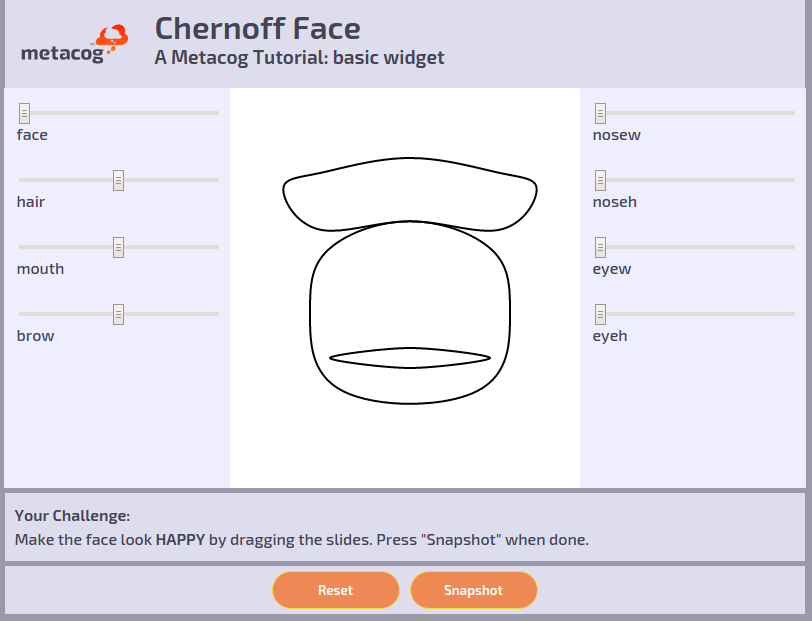

Base Widget
This is a widget without any Metacog integration. It will be used as base for the following tutorials.
This is a widget without any Metacog integration. It will be used as base for the following tutorials.

This version of the widget implements basic instrumentation for logging functionality. Please refer to Tutorial 01: Chernof Face.
The instrumented widget is refactored to support recording, playback and scoring Training Sessions. Please refer to Tutorial 02: Chernof Face.